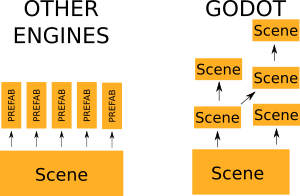

Want to write games on Linux? I do! Here's how to hit the ground running.
This post is a (non-exhaustive) overview of the tools available on Linux, just to show that it is possible to use Linux at every step of the game development process. It's the first blog post of what will be a multi-part series on getting going with indie video game development on Linux.
Already into web development? Check out this article on making the conceptual jump.
Linux Gaming: The Golden Age
Once upon a time, the words "Linux" and "games" rarely went together. Linux came in dead last as a viable gaming platform. Of course, over the last few years this has completely changed.
The same story could be told for game development on Linux -- while there have always been a litany of free software graphics engines, the modern indie dev scene tends to shy away from this more "DIY" approach and go for the "batteries-included" game engines. Well, the good news is these, too, are making their Linux debut, and so us Linux nerds now have a glut of options available for making games.
All software I suggest here is free software, and almost all should be available in your repo (e.g. Ubuntu Software Center) for free. I'll go over all the options, and the reasoning for the choices I made.
Game engine: Godot
Top engine choices for Linux game dev
- Non-free: Unreal Engine 4, Unity 3D
- Free game engines: Godot, Atomic Game Engine, Torque1
- Free 3D graphics engines: Ogre 3D, Irrlicht, libGDX, three.js2
- Free 2D graphics engines: LÖVE, Cocos 2D, pixi.js2
1: Has non-free tools
2: For browser-based games
There are already tons of articles comparing the two most popular game engines available, both of which have native linux versions, so I won't waste your time with that. Instead, I'll quickly go over the reasons I didn't go with either, but instead went with the Godot Engine.
Versus this proprietary competition, the most obvious advantage is licensing: Godot costs nothing, and I own 100% whatever I make with it, no legalese-thinking required. Similarly, no vendor lock-in. I don't want my game-making business dependent on a corporation that can legally pull the rug out from under me, either through new licensing restrictions, closing off their editor from my platform, or just making controversial decisions and cutting off support for old features that I depend on. I may seem too severe, but I for one have been burned too many times to go down that route again.
Licensing aside, I also simply prefer its approach to scene structure, terse scripting language, light-weight distributable (30MB for the entire thing!), extensible C++ source code (so I will never encounter a brick-wall that can't be broken), and, well, free software ethos: as community-driven software, it keeps the "indie" in "indie game dev"! ;)

Godot has a different approach to scene structure
2D Graphics: Inkscape, GIMP, Krita
Linux has everything you need for 2D graphics for game development. These tools are useful for building everything from UI elements, painting assets in 2D games, or creating textures for 3D games.
Inkscape is my favorite vector editor. That basically means you deal with "lines and shapes" as opposed to pixels. If you are creating scalable, clean, sharp images based on shapes, this is the way to go.
GIMP is a raster image editor, great for manipulating photographs or tweaking textures. If you haven't used it in a while, you should: It's recently caught up with proper built-in layer folders, a PS-like single window interface, and improved text tool.
Krita is a popular and powerful tool for digital artwork.
3D Graphics: Blender
Under Linux, there is really one way to go for 3D graphics, and fortunately it's a great way: Blender. Although dauntingly complex, it's one of the most popular 3D creation suites available, and integrates excellently with engines like Godot. Personally, I'm a noob at 3D modeling ("UV mapping, y u no work"), but I do know that Blender is pretty dang powerful in the right hands, being used for everything from 3D-animated movies, to level editing. The canonical use of Blender is for creating and texturing 3D models to be imported into your game engine.
If for whatever reason Blender isn't your thing (and you're willing to fork over quadruple digits of cash, yikes), the old industry standard of Maya also has a native Linux version, as does Modo.
Sound effects: Audacity
Despite its out-dated interface, Audacity remains a solid option for recording and editing little sound effects. This has built-in OGG and WAV support, and so it plays very nicely with Godot.
Music: Ardour, LMMS, KXStudio
If you haven't looked into this in a while, you might be surprised at how far Linux audio has gotten. If you are intending to write your own music for your game, you can do quite well with Linux.
LMMS comes with some pretty sweet retro VGM synths built-in, including sound emulators of old game systems

{kind=link}
If you want to throw together some catchy video game tunes or retro sound-effects, LMMS has you covered, with dozens of built in instruments (including retro synthesizers) and pre-packaged samples. It has a shallow learning curve, so you'll definitely be able to create, well, "something" right away.
Ardour is a "pro-tier" DAW and sequencer. It has both built in MIDI and raster sound support, hosts VSTi and other instruments, and sports non-destructive NLE, basically everything you'd expect. If you want to record and mix a track, or delve a little deeper into music production, it's worth checking out.
It's worth mentioning that a few popular proprietary DAW's have native Linux support also, such as BitWig studio.
For Linux audio, I highly recommend getting this software (and a lot more goodies) via the KXStudio repos. These guys are awesome, they've put together a bigger and more recent selection of audio software than most standard repos. I also recommend that you consider the approach of having a dedicated partition just for music production. If you want to get set up with this, check out my other article: getting started with music production on Linux .
Everything else
Version Control: It cannot be stressed enough... use version control! This keeps you from losing work to mistakes, and makes collaboration much, much easier. While Git (esp. with LFS for game assets), might be the most popular, some prefer Mercurial.
Text editor: Sometimes you'll need to dig into source code or scene files without the use of the IDE. There are a crazy number of high-quality text-editors for Linux, so even pre-installed options (e.g., gedit) are vastly superior to Mac/Windows counter-parts. Personally, I use vim for all my coding and text editing. It has a very steep learning curve, so if you are interested, be prepared to sink a lot of time into it!
Video editor: For editing your trailer, OpenShot is a solid choice
Enter the penguin army
Perhaps for the first time, top-notch tools for authoring everything from game code to graphics to sound on Linux are here! Although I'm new to full-time game development, I have been working on game and audio projects (both on Linux and Windows) for 15+ years now, and today the offerings have never been better.
Do you write games on Linux, or are considering it? Do you prefer other tools? I'd love to hear in the comments!
Changes: From feedback, I added mentions of Maya, Modo, Git LFS, Mercurial, libGDX, and Atomic Game Engine.